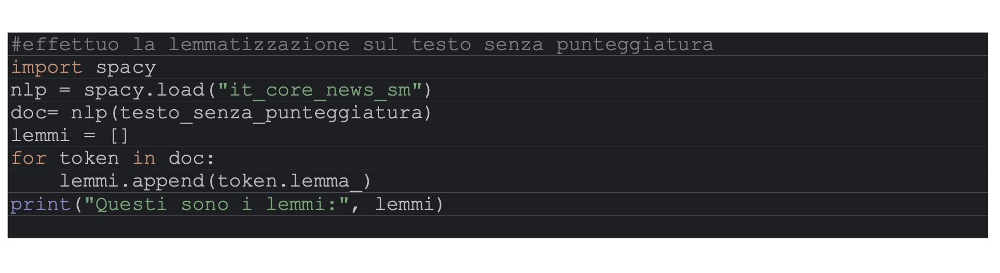

In questa fase ho utilizzato la libreria spacy per effettuare la lemmatizzazione del testo. Ho caricato il modello italiano chiamato "it_core_news_sm" e applicato il modulo nlp al testo privo di punteggiatura. Da ciascun token ottenuto, ho estratto il lemma corrispondente, ovvero la forma base della parola, attraverso l'attributo chiamato "lemma_".